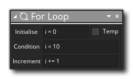
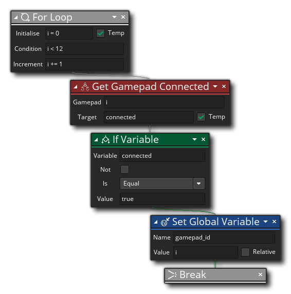

La description
L'action For est utilisée pour effectuer des boucles qui se terminent uniquement lorsqu'une valeur atteint la condition donnée. Vous donnez une valeur initiale en tant que variable (qui peut être marquée comme variable locale temporaire - c'est généralement ce que vous voulez), puis vous donnez la condition pour vérifier la variable par rapport (par exemple si elle est inférieure à une certaine valeur), et enfin le montant pour incrémenter la variable à chaque itération de la boucle. Ainsi, le flux général est le suivant:
- Vous initialisez une variable à une valeur
- Vous définissez la condition pour vérifier cette variable contre
- Vous définissez combien la variable doit être incrémentée à chaque itération de la boucle
- Vous ajoutez ensuite des actions dans la boucle, et celles-ci seront exécutées pour chaque itération jusqu'à ce que la condition retourne false ou une action Break est rencontrée.
Lors de l'ajout d'actions à effectuer dans la boucle, celles-ci sont ajoutées à celles que vous ajouteriez à un «si», c'est-à-dire: en le plaçant sur le côté de l'action plutôt qu'en dessous:
Toutes les actions ajoutées sur le côté seront incluses dans le For et seront exécutées avant l'événement ou le script continue avec les actions ajoutées sous. Notez que vous pouvez terminer prématurément n'importe quelle boucle si vous appelez l'action Break, et lorsque vous utilisez For loops, vous n'avez pas besoin d'incrémenter et vous pouvez également le décrémenter, à condition que la condition que vous utilisez soit appropriée. Par exemple, définissez la variable initiale sur 10, définissez la condition pour vérifier la valeur inférieure à 0, puis définissez la valeur de l'incrément sur -1 et la boucle va itérer 10 fois, en comptant à rebours de 10 à 0.

Syntaxe de l'action:
Arguments:
Argument La description Initialise Initialise la variable qui sera utilisée pour le comptage à une valeur (peut être marquée comme une variable locale temporaire) Condition La condition pour vérifier pour casser la boucle Increment Le montant à incrémenter (ou décrémenter) la variable de comptage initial à chaque itération de la boucle
Exemple:
Le code de bloc d'action ci-dessus exécute un for boucle pour vérifier et voir si une manette est connectée à l'un des 12 "emplacements" disponibles. Si une manette est découverte, une variable globale est définie sur le numéro d'emplacement actuel et la boucle est rompue.